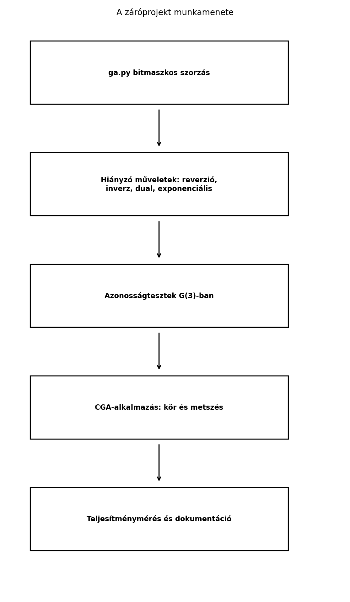

A Bázispengék bitmaszkkal: a szorzás algoritmusa
ortogonális bázisban alfejezetben elkészítettük a bitmaszkos szorzás
magját, de egy könyvtár csak akkor válik megbízható eszközzé, ha a
műveletek teljesek, és a könyv fő tételeit automatizált tesztek is
ellenőrzik. Ebben a záróprojektben ezt a lépést tesszük meg: befejezzük
a ga.py modult a hiányzó műveletekkel, majd tesztekkel
igazoljuk a geometriai algebra legfontosabb azonosságait. A letesztelt
könyvtár lesz az alapja a Záróprojekt II: merev test
forgásának szimulációja rotorokkal alfejezetnek, így itt a kódnak
nemcsak „működnie”, hanem a megadott tesztek által ellenőrzött módon
kell működnie.
A tesztek véges numerikus ellenőrzések: erős regressziós védelmet adnak, de nem bizonyítják minden lehetséges bemenetre a helyességet.
A tesztelés nem formalitás: a geometriai algebrában apró előjelhibák vagy sorrendcserék sokáig rejtve maradhatnak, mert egy-egy azonosság véletlenül még teljesülhet. Ezért a teszteket a könyv korábbi tételeiből válogatjuk, nem pedig mesterséges példákból.

A folyamat célja, hogy a végén egyetlen modulban legyen minden olyan művelet, amelyet a könyv korábbi fejezetei használtak, és mindegyikhez tartozzon legalább egy automatikusan ellenőrizhető teszt.
ga.py felületeA Bázispengék bitmaszkkal: a szorzás algoritmusa
ortogonális bázisban alfejezetben megismertük az
Algebra(metric) és az MV osztály alapötletét.
A záróprojektben az alábbi követelményeket tűzzük ki a könyvtár elé:
*,^,lcontract,reverse,grade,dual,inverse vektorra, pengére és rotorra,exp_bivector skalár négyzetű
bivektorra,exp_series általános
elemre,rotor térbeli forgatáshoz.A korábbi Algebra(metric) hívás megmarad, de a konform
modell miatt ki kell terjesztenünk a metrika kezelését. A CGA-ban a
bázisvektorok nem ortogonálisak, mert
.
Ezért az Algebra konstruktor mostantól listát és
mátrixot is elfogad: lista esetén diagonális metrikát épít, mátrix
esetén pedig a teljes
táblázatot használja. A konstruktor a metrikát soronként
lemásolja, ezért a hívó későbbi módosításai nem
érvénytelenítik az előre számolt szorzótáblát; a metrikát tekintsük
változtathatatlannak. Ha mégis módosítani kell, új
Algebra-példányt kell létrehozni.
A teljes szorzótábla azonban nem ingyenes. A táblának
bejegyzése van, és ezen felül a _basis_product minden jobb
oldali,
-fokú
bázispengét
antiszimmetrizált monom összegére bontja, ezért egyetlen nem triviális
bejegyzés előállítása
permutáció végigjárását igényli. A nem triviális bázispárokra a
permutációvégigjárások száma
ami nagy
-re
a
táblaméretnél is gyorsabban nő, mert a magas fokszámú tagokban megjelenő
tényező faktoriálisan növekszik. Ez a könyv oktatási célú, kis dimenziós
használatában (például
-ban
vagy a 4–5 dimenziós CGA-ban) elfogadható, de nagyobb
-re
az inicializálási idő és a memória exponenciálisan, illetve
faktoriálisan nő. A ritka operandustárolás ezen nem segít: az csak a
szorzásoknál hagyja ki a nulla együtthatókat, a konstruktor előszámítása
a teljes táblát felépíti. Nagyobb dimenziókhoz rekurzív szorzó (a jobb
oldali pengét bázisvektoronként bontva, permutációk nélkül) vagy igény
szerinti (lusta) táblaépítés szükséges.
Az alábbi kód a ga.py kiegészített általános részét
mutatja. A bitmaszkos szorzás itt már nem diagonális metrikára is
működik. A jobb oldali bázispengét antiszimmetrizált monomok összegeként
írjuk fel, majd a bal oldali pengét jobbról megszorozzuk a monom
bázisvektoraival az
szabály szerint, ahol
a Jelölés- és konvenciójegyzék
jobb kontrakciója
(
az
fokszáma). A kontrakció a teljes Gram-mátrixot használja, ezért a
nullbázisú CGA-metrika is helyesen kezelhető.
import math
from itertools import combinations, permutations
def _permutation_sign(perm):
"""A permutáció előjele: +1 páros, -1 páratlan inverziószám esetén."""
inversions = sum(
1 for i in range(len(perm))
for j in range(i + 1, len(perm))
if perm[i] > perm[j]
)
return -1.0 if inversions % 2 else 1.0
class Algebra:
def __init__(self, metric, names=None):
# A metrika lehet diagonális lista vagy teljes Gram-mátrix.
if isinstance(metric, list) and all(isinstance(row, list) for row in metric):
n = len(metric)
if n == 0:
raise ValueError("A metrika nem lehet üres.")
if any(len(row) != n for row in metric):
raise ValueError("A Gram-mátrix négyzetes legyen.")
for i in range(n):
for j in range(n):
if not isinstance(metric[i][j], (int, float)):
raise TypeError("A Gram-mátrix elemei számok legyenek.")
if metric[i][j] != metric[j][i]:
raise ValueError("A Gram-mátrix szimmetrikus legyen.")
self.g = [list(row) for row in metric]
elif isinstance(metric, list) and all(isinstance(x, (int, float)) for x in metric):
if not metric:
raise ValueError("A metrika nem lehet üres.")
n = len(metric)
self.g = [[metric[i] if i == j else 0.0 for j in range(n)]
for i in range(n)]
else:
raise TypeError("A metrika diagonális lista vagy négyzetes Gram-mátrix legyen.")
self.n = len(self.g)
if names is None:
self.names = [f"e{i+1}" for i in range(self.n)]
else:
if len(names) != self.n:
raise ValueError("A bázisnevek száma egyezzen a metrika dimenziójával.")
if len(set(names)) != len(names):
raise ValueError("A bázisnevek legyenek egyediek.")
for name in names:
if not isinstance(name, str) or len(name) < 2 or not name.startswith("e"):
raise ValueError(f"Érvénytelen bázisnév: {name!r}")
labels = [name[1:] for name in names]
if len(set(labels)) != len(labels):
raise ValueError("A bázisnevek 'e' utáni címkéi legyenek egyediek.")
self.names = list(names)
# A bázisnevek "e" előtag utáni címkéi: "e1" -> "1", "einf" -> "inf".
self._label_to_index = {name[1:]: i for i, name in enumerate(self.names)}
self._build_basis_product_table()
# A bázispenge-nevek és maszkok közötti átváltás
def _parse_name(self, name):
"""Az 'e12' / 'e0inf' / 'e1_2' névhez tartozó bázisindexek sorrendben.
A numerikus címkéket teljes számként olvassuk, ezért az 'e10' nem
esik szét 'e1'+'e0'-ra. Az aláhúzásos alak ('e1_2', 'e0_inf')
minden címkét külön tokenként olvas, ezért többjegyű címke mellett
is egyértelmű. Ismétlődő indexet elutasítunk.
"""
if not name.startswith("e"):
raise ValueError(f"Érvénytelen bázispengenév: {name!r}")
rest = name[1:]
if "_" in rest:
indices = []
for token in rest.split("_"):
if token not in self._label_to_index:
raise ValueError(f"Ismeretlen bázisnév: {name!r}")
idx = self._label_to_index[token]
if idx in indices:
raise ValueError(f"Ismétlődő index a bázispengenévben: {name!r}")
indices.append(idx)
return indices
indices = []
while rest:
if rest[0].isdigit():
j = 0
while j < len(rest) and rest[j].isdigit():
j += 1
token = rest[:j]
if token in self._label_to_index:
idx = self._label_to_index[token]
rest = rest[j:]
else:
# Többjegyű számnál a leghosszabb olyan címkét vesszük,
# amely a számjegysor elején áll (pl. 3D-ben e12 = e1∧e2).
candidates = sorted(
(l for l in self._label_to_index
if l.isdigit() and token.startswith(l)),
key=len, reverse=True)
if not candidates:
raise ValueError(f"Ismeretlen bázisnév: {name!r}")
label = candidates[0]
idx = self._label_to_index[label]
rest = rest[len(label):]
else:
labels = sorted((l for l in self._label_to_index
if not l[0].isdigit()), key=len, reverse=True)
for label in labels:
if rest.startswith(label):
idx = self._label_to_index[label]
rest = rest[len(label):]
break
else:
raise ValueError(f"Ismeretlen bázisnév: {name!r}")
if idx in indices:
raise ValueError(f"Ismétlődő index a bázispengenévben: {name!r}")
indices.append(idx)
return indices
def mask_of_name(self, name):
if name == "1":
return 0
mask = 0
for idx in self._parse_name(name):
mask |= 1 << idx
return mask
def name_of_mask(self, mask):
"""A maszk visszaolvasható bázispenge-neve.
Először az egybeírt alakot ('e12') próbáljuk; ha az ugyanarra a
pengére olvasódik vissza, marad. Ha egy többjegyű címkével ütközik
(például a bázisban van 'e12' vektor, és a maszk az e1∧e2 penge),
akkor aláhúzással választjuk el a címkéket ('e1_2'), így
blade(name_of_mask(mask)) mindig ugyanazt az előjeles pengét adja.
"""
if mask == 0:
return "1"
labels = [self.names[i][1:] for i in range(self.n)
if mask & (1 << i)]
plain = "e" + "".join(labels)
try:
parsed = self.blade(plain)
except ValueError:
parsed = None
if parsed is not None and parsed.coeffs == {mask: 1.0}:
return plain
return "e" + "_".join(labels)
def blade(self, name):
"""A névvel jelölt bázispenge, az indexsorrend előjelével."""
if name == "1":
return MV(self, {0: 1.0})
indices = self._parse_name(name)
if len(set(indices)) != len(indices):
raise ValueError("Ismétlődő index a bázispengenévben.")
mask = 0
for idx in indices:
mask |= 1 << idx
sign = _permutation_sign(indices)
return MV(self, {mask: sign})
def vector(self, coords):
if len(coords) != self.n:
raise ValueError(f"A koordináták száma {self.n} kell legyen.")
coeffs = {1 << i: coords[i] for i in range(self.n)}
return MV(self, coeffs)
def pseudoscalar(self):
return MV(self, {(1 << self.n) - 1: 1.0})
def grade_of_mask(self, mask):
return bin(mask).count("1")
def _build_basis_product_table(self):
"""A teljes 2^n x 2^n bázisszorzattábla felépítése.
A tábla 4^n bejegyzésű; ez az oktatási célú, kis dimenziós
használat korlátja. Nagyobb n-re lusta gyorsítótár vagy
fokszám-specializált szorzó szükséges.
"""
self.prod_table = {}
for m1 in range(1 << self.n):
for m2 in range(1 << self.n):
self.prod_table[(m1, m2)] = self._basis_product(m1, m2)
def _blade_times_basis_vector(self, mask, j):
"""Az A penge jobb szorzása az e_j bázisvektorral.
A e_j = A⌊e_j (jobb kontrakció, Gram-mátrixszal) + A∧e_j, ahol a kontrakció a teljes Gram-mátrixot
használja, ezért a formula nem ortogonális bázisban is érvényes.
"""
result = {}
idx = [i for i in range(self.n) if mask & (1 << i)]
r = len(idx)
# Az ék-rész: A∧e_j, ami csak akkor nem nulla, ha e_j nincs A-ban.
if not (mask & (1 << j)):
before = sum(1 for i in idx if i < j)
result[mask | (1 << j)] = (-1.0) ** (r - before)
# A kontrakciós rész: Σ_l (-1)^(r-1-l) g_{i_l j} A nélkül i_l.
for l, i in enumerate(idx):
gij = self.g[i][j]
if gij != 0.0:
sign = (-1.0) ** (r - 1 - l)
mm = mask ^ (1 << i)
result[mm] = result.get(mm, 0.0) + sign * gij
return result
def _basis_product(self, m1, m2):
"""Két bázispenge szorzata tetszőleges Gram-mátrixra.
A jobb oldali B pengét antiszimmetrizált monomok összegeként
írjuk fel, majd A-t jobbról sorra megszorozzuk a monom
vektoraival. A permutációk előjele és az 1/s! faktor adja B-t.
"""
if m1 == 0 or m2 == 0:
return {m1 ^ m2: 1.0}
idx = [j for j in range(self.n) if m2 & (1 << j)]
s = len(idx)
total = {}
for perm in permutations(idx):
sign = _permutation_sign(perm)
current = {m1: 1.0}
for j in perm:
nxt = {}
for mask, coeff in current.items():
for mm, cc in self._blade_times_basis_vector(mask, j).items():
nxt[mm] = nxt.get(mm, 0.0) + coeff * cc
current = nxt
for mask, coeff in current.items():
total[mask] = total.get(mask, 0.0) + sign * coeff
factor = 1.0 / math.factorial(s)
return {m: c * factor for m, c in total.items()
if c * factor != 0.0}Az MV osztály most már a fenti táblázatot használja, és
tartalmazza a hiányzó metódusokat:
class MV:
def __init__(self, algebra, coeffs=None):
if not isinstance(algebra, Algebra):
raise TypeError("Az MV első argumentuma Algebra legyen.")
self.algebra = algebra
self.coeffs = {}
for mask, coeff in (coeffs or {}).items():
if not isinstance(mask, int) or mask < 0 or mask >= (1 << algebra.n):
raise ValueError(f"Érvénytelen bázispengemaszk: {mask!r}")
if not isinstance(coeff, (int, float)):
raise TypeError("Az együtthatók számok legyenek.")
if coeff != 0.0:
self.coeffs[mask] = float(coeff)
def _check_compatible(self, other):
"""Két MV csak azonos Algebra-példányhoz tartozhat."""
if isinstance(other, MV):
if other.algebra is not self.algebra:
raise ValueError("Különböző Algebra-példányok elemei nem keverhetők.")
return other
def __add__(self, other):
result = dict(self.coeffs)
if isinstance(other, (int, float)):
result[0] = result.get(0, 0.0) + other
else:
if not isinstance(other, MV):
return NotImplemented
self._check_compatible(other)
for mask, coeff in other.coeffs.items():
result[mask] = result.get(mask, 0.0) + coeff
return MV(self.algebra, result)
__radd__ = __add__
def __sub__(self, other):
if isinstance(other, (int, float)):
return self + (-other)
if not isinstance(other, MV):
return NotImplemented
self._check_compatible(other)
return self + (-1.0) * other
def __rsub__(self, other):
return (-self) + other
def __neg__(self):
return MV(self.algebra, {m: -c for m, c in self.coeffs.items()})
def __truediv__(self, other):
if isinstance(other, (int, float)):
if other == 0:
raise ZeroDivisionError("Nullával nem lehet osztani.")
return MV(self.algebra, {m: c / other for m, c in self.coeffs.items()})
raise TypeError("MV-t csak skalárral lehet osztani.")
def __mul__(self, other):
if isinstance(other, (int, float)):
return MV(self.algebra, {m: c * other for m, c in self.coeffs.items()})
if not isinstance(other, MV):
return NotImplemented
self._check_compatible(other)
result = {}
for m1, c1 in self.coeffs.items():
for m2, c2 in other.coeffs.items():
prod = self.algebra.prod_table[(m1, m2)]
for mask, coeff in prod.items():
result[mask] = result.get(mask, 0.0) + c1 * c2 * coeff
return MV(self.algebra, result)
__rmul__ = __mul__
def __xor__(self, other):
# Külső szorzat: a geometriai szorzat r+s fokú része tagpáronként.
if not isinstance(other, MV):
return NotImplemented
self._check_compatible(other)
result = {}
for m1, c1 in self.coeffs.items():
r1 = self.algebra.grade_of_mask(m1)
for m2, c2 in other.coeffs.items():
r2 = self.algebra.grade_of_mask(m2)
prod = self.algebra.prod_table[(m1, m2)]
for mask, coeff in prod.items():
if self.algebra.grade_of_mask(mask) == r1 + r2:
result[mask] = result.get(mask, 0.0) + c1 * c2 * coeff
return MV(self.algebra, result)
def grade(self, k):
return MV(self.algebra, {m: c for m, c in self.coeffs.items()
if self.algebra.grade_of_mask(m) == k})
def scalar(self):
return self.coeffs.get(0, 0.0)
def reverse(self):
result = {}
for mask, coeff in self.coeffs.items():
r = self.algebra.grade_of_mask(mask)
result[mask] = coeff * (-1)**(r * (r - 1) // 2)
return MV(self.algebra, result)
def inverse(self):
"""Az egyszerű penge/verzor inverz: A^{-1} = reverse(A)/(A*reverse(A)).
Csak akkor használható, ha A*reverse(A) skalár. A nem skalár denom
ValueError-t ad; ez nem jelenti feltétlenül azt, hogy A nem
invertálható. Például 2+e1 invertálható (inverze (2-e1)/3), de
A*reverse(A)=5+4e1 nem skalár, ezért ez a speciális módszer nem
támogatja. Az 1+e1 viszont tényleg szinguláris:
(1+e1)(1-e1)=0. A nulla skalár denom ZeroDivisionError-t ad.
"""
rev = self.reverse()
denom = self * rev
# Ez az egyszerű módszer csak akkor működik, ha A * reverse(A) skalár.
if any(mask != 0 and coeff != 0.0 for mask, coeff in denom.coeffs.items()):
raise ValueError(
"Ez az egyszerű inverz módszer csak skalár A * reverse(A) "
"esetén használható; az elem ettől még lehet invertálható.")
d = denom.scalar()
if d == 0.0:
raise ZeroDivisionError(
"Az elem szinguláris: A * reverse(A) skalárja nulla.")
if not math.isfinite(d):
raise ValueError("Az inverz számítása nem véges skalárt adott.")
return (1.0 / d) * rev
def dual(self):
I = self.algebra.pseudoscalar()
return self * I.inverse()
def lcontract(self, other):
if not isinstance(other, MV):
return NotImplemented
self._check_compatible(other)
result = {}
for m1, c1 in self.coeffs.items():
r1 = self.algebra.grade_of_mask(m1)
for m2, c2 in other.coeffs.items():
r2 = self.algebra.grade_of_mask(m2)
if r2 >= r1:
prod = self.algebra.prod_table[(m1, m2)]
for mask, coeff in prod.items():
if self.algebra.grade_of_mask(mask) == r2 - r1:
result[mask] = result.get(mask, 0.0) + c1 * c2 * coeff
return MV(self.algebra, result)
def qform(self):
"""Metrikus kvadratikus alak: <A reverse(A)>_0 (nem feltétlenül pozitív)."""
return (self * self.reverse()).scalar()
def norm(self):
"""Metrikus nagyság; nem pozitív definit norma, STA/CGA nullvektoroknál 0."""
return math.sqrt(abs(self.qform()))
def max_coeff(self):
"""Numerikus összehasonlításhoz: a legnagyobb abszolút együttható."""
return max((abs(c) for c in self.coeffs.values()), default=0.0)
def is_zero(self, tol=1e-10):
return self.max_coeff() < tol
def __repr__(self):
if not self.coeffs:
return "0"
terms = []
for mask in sorted(self.coeffs):
c = self.coeffs[mask]
if abs(c) < 1e-14:
continue
name = "" if mask == 0 else self.algebra.name_of_mask(mask)
terms.append((c, name))
if not terms:
return "0"
out = ""
for i, (c, name) in enumerate(terms):
sign = "-" if c < 0 else "+"
body = f"{abs(c):.4f}{name}"
if i == 0:
out = ("-" if sign == "-" else "") + body
else:
out += f" {sign} {body}"
return outKét MV csak akkor kombinálható (összeadás, szorzás,
külső szorzat, kontrakció), ha ugyanahhoz az
Algebra-példányhoz tartozik; eltérő metrikájú vagy bázisú
elemek keverése ValueError-t ad. Az Algebra
konstruktor ellenőrzi a Gram-mátrix négyzetességét és szimmetriáját, a
bázisnevek számát és egyediségét; a degenerált metrika önmagában
megengedett. Az MV konstruktor ellenőrzi a maszkhatárokat,
és az alapműveletek nem dobják el a kis együtthatókat: például a
megmarad, és
-tal
szorozva
-et
ad. Az is_zero(tol) abszolút toleranciát használ; numerikus
összehasonlításnál a hívó feladata a feladat skálájának megfelelő
tol megadása. Az inverse csak akkor
használható, ha
skalár; a nulla skalár szinguláris eset
(ZeroDivisionError), a nem skalár denom pedig
ValueError. A két hiba jelentése eltér: a
ZeroDivisionError tényleges szingularitást jelez, a nem
skalár denom viszont csak azt, hogy ez az egyszerű képlet nem
alkalmazható. Például
pengeinverze sikeres
();
tényleg szinguláris, mert
,
ezt a módszer ValueError-val utasítja el;
viszont invertálható, inverze
,
de
nem skalár, ezért ezt a speciális módszer nem támogatja. Az általános
inverz képlete a Bivektorok a térben
alfejezetben szerepel; a
inverzét az A G(2) algebra: multivektorok és
fokszámok mutatja. Az osztás (__truediv__) a skalár
osztót már az együtthatókon való iterálás előtt ellenőrzi: nulla osztóra
mind a nulla, mind a nemnulla multivektor
ZeroDivisionError-t ad, így az eredmény nem függ a ritka
tárolás kitöltöttségétől; nem nulla osztóval a nulla elem továbbra is
nulla.
A numerikus összehasonlításhoz a max_coeff() metódust
használjuk, amely a legnagyobb abszolút együtthatót adja vissza. Ez nem
metrikus norma, hanem együtthatónorma: STA/CGA metrikában a
qform() (az
metrikus kvadratikus alak) nem pozitív definit, ezért a
norm() önmagában nem alkalmas arra, hogy két multivektor
közeliségét eldöntse. Az is_zero() is a
max_coeff() alapján dönt.
A rotor és az exp_bivector az
Algebra osztályhoz tartozik:
def exp_bivector(self, B):
"""Tiszta bivektor exponenciálisa, ha B^2 skalár."""
if any(self.grade_of_mask(m) != 2 for m in B.coeffs):
raise ValueError("Az exp_bivector csak tiszta bivektorra használható.")
B2 = B * B
if any(mask != 0 for mask in B2.coeffs):
raise ValueError(
"A B^2 nem skalár; használd az exp_series teljes sorfejtését.")
b2 = B2.scalar()
one = MV(self, {0: 1.0})
if b2 == 0.0:
return one + B
if b2 < 0:
theta = math.sqrt(-b2)
# e^B = cos(theta) + sin(theta)/theta * B
return math.cos(theta) * one + (math.sin(theta) / theta) * B
alpha = math.sqrt(b2)
# e^B = cosh(alpha) + sinh(alpha)/alpha * B
return math.cosh(alpha) * one + (math.sinh(alpha) / alpha) * B
def exp_series(self, A, terms=60, tol=1e-15):
"""Teljes exponenciális hatványsor: e^A = sum_k A^k/k!."""
result = MV(self, {0: 1.0})
term = MV(self, {0: 1.0})
for k in range(1, terms + 1):
term = (term * A) * (1.0 / k)
result = result + term
if term.max_coeff() < tol:
break
return result
def rotor(self, B, theta):
"""R = exp(-B*theta/2); térbeli forgatáshoz B^2 = -1 kell."""
return self.exp_bivector(-theta / 2.0 * B)
Algebra.exp_bivector = exp_bivector
Algebra.exp_series = exp_series
Algebra.rotor = rotorA fenti kódban a rotor a térbeli forgatásokra szolgál:
esetén adja a könyvben használt
alakot. Az exp_bivector ennél általánosabb, mert a
skalár előjelétől függően három ágat használ:
A Lorentz-transzformációk mint rotorok
alfejezet boost-rotorja éppen a harmadik ág:
,
és
ezért
exp_bivector((alpha/2)*sigma) közvetlenül kiszámítja. A
rotor segédfüggvény szándékosan a mínusz előjeles térbeli
alakot használja; boosthoz az exp_bivector-t hívjuk pozitív
kitevővel, nem a rotor-t negatív szöggel, mert az utóbbi a
rapiditás előjelét fordítaná meg.
Az exp_bivector csak tiszta bivektorra és skalár
négyzetre működik. G(3)-ban minden bivektor négyzete skalár, de 4D-ben
például
esetén
,
ezért itt a függvény kivételt dob. A
nilpotens esetet a teljes négyzet nullává válása alapján kezeli, nem
csupán a skalárrész alapján. A nem skalár négyzetre az
exp_series teljes hatványsort számol: az
első legfeljebb terms tagját összegzi, és a
tol alatti tag után leáll. Ez a 4D-s példára is működik, de
nagy együtthatóknál több tag kell; a függvény oktatási célú, nem
helyettesíti a numerikusan stabil mátrixexponenciálist.
API-megfeleltetés. A korábbi fejezetek műveletei a következő helyen érhetők el a modulban:
| Művelet | API | Megjegyzés |
|---|---|---|
| geometriai szorzat, ékszorzat | A * B, A ^ B |
a szorzás minden fokszámot megtart |
| bal kontrakció | A.lcontract(B) |
; általános, magasabb fokszámú esetre ez a könyv művelete |
| vektor–bivektor pontszorzat | v.lcontract(B) |
|
| bivektor–vektor pontszorzat | (B * a).grade(1) |
, például |
| bivektor–bivektor pontszorzat | (B * C).scalar() |
, euklideszi bivektorokra negatív definit |
| reverzió, fokszám, duális | A.reverse(), A.grade(k),
A.dual() |
a duális a pszeudoszkalár inverzét használja |
| inverz | A.inverse() |
csak skalár
esetén; nulla skalárnál ZeroDivisionError, nem skalár denom
esetén ValueError (ez nem feltétlenül nem invertálható
elem) |
| vektor, penge, pszeudoszkalár | Algebra.vector, Algebra.blade,
Algebra.pseudoscalar |
a bázisnevek az Algebra konstruktorában adhatók
meg |
| exponenciális, teljes sor, rotor | Algebra.exp_bivector, Algebra.exp_series,
Algebra.rotor |
az első csak skalár -re, a második általános -ra |
| metrikus mennyiségek | qform(), norm(), max_coeff(),
is_zero(tol) |
a qform() STA/CGA-ban negatív vagy nulla is lehet; a
norm()
nemnegatív, de nullvektorra 0, ezért nem távolság |
Az általános Hestenes-féle belső szorzat
()
szándékosan nem külön metódus: a könyv nem ezt használja, hanem a bal
kontrakciót, illetve a fenti fokszámhoz kötött pontjelölést. A korábbi
fejezetek vektoros segédfüggvényei (vector,
blade, pseudoscalar) ugyanígy az
Algebra példányán érhetők el; a mátrixexponenciális és a
numerikus lineáris algebra nem része a modulnak.
A három kódrészlet egyetlen ga.py fájlba illesztve adja
a teljes modult. A test_ga.py a
from ga import Algebra, MV sorral importálja, és a fejezet
végén található if __name__ == "__main__": blokkal
futtatható.
Ugyanazt a forgatást, amelyet az A rotor exponenciális alakja alfejezetben papíron kiszámoltunk, most a könyvtárral is ellenőrizzük. Legyen , , és forgassuk az vektort.
Kézzel: . A szendvicsszorzat:
Először a bal oldali szorzást végezzük el. Mivel ,
A jobb oldallal szorozva: a és összefüggéseket használjuk. A műveletet elvégezve
Ez éppen a szögű forgatás eredménye: .
Pythonban ugyanez:
import math
from ga import Algebra, MV
ga = Algebra([1, 1, 1])
e1, e2, e12 = ga.blade("e1"), ga.blade("e2"), ga.blade("e12")
theta = math.pi / 3
R = ga.rotor(e12, theta)
print("R * R.reverse() skalárja:", (R * R.reverse()).scalar())
v_rot = R * e1 * R.reverse()
print("Forgatott e1:", v_rot)
print("Várt e1:", 0.5 * e1 + (math.sqrt(3)/2) * e2)Várt kimenet:
R * R.reverse() skalárja: 1.0
Forgatott e1: 0.5000e1 + 0.8660e2
Várt e1: 0.5000e1 + 0.8660e2A 0.5000e1 + 0.8660e2 kimenet a repr négy
tizedesre kerekített formátuma; a numerikus egyezést a teszt külön,
max_coeff() alapú ellenőrzéssel végzi.
A teszteket a test_ga.py fájlba szervezhetjük. Minden
teszt egy-egy korábbi tételt tükröz. A fájl elején importáljuk a modult
és a szükséges segédeszközöket:
import math
import numpy as np
from ga import Algebra, MVAz A G(3) algebra: nyolc báziselem és a szorzótábla alfejezetben felírtuk a nyolc bázispenge szorzótábláját. A bitmaszkos szorzásnak pontosan ezt kell visszaadnia:
def _reference_product(indices_a, indices_b):
"""Független referencia G(3)-ra: bázisvektorok összefűzése, átrendezés, e_i^2=1."""
seq = list(indices_a) + list(indices_b)
sign = 1
while True:
changed = False
for k in range(len(seq) - 1):
if seq[k] == seq[k + 1]:
del seq[k:k + 2]
changed = True
break
if changed:
continue
for k in range(len(seq) - 1):
if seq[k] > seq[k + 1]:
seq[k], seq[k + 1] = seq[k + 1], seq[k]
sign = -sign
changed = True
break
if not changed:
break
return tuple(seq), sign
def test_multiplication_table_3d():
ga = Algebra([1, 1, 1])
for m1 in range(8):
for m2 in range(8):
a = tuple(i for i in range(3) if m1 & (1 << i))
b = tuple(i for i in range(3) if m2 & (1 << i))
expected_indices, sign = _reference_product(a, b)
expected_mask = sum(1 << i for i in expected_indices)
got = ga.prod_table[(m1, m2)]
assert got.get(expected_mask, 0.0) == sign
assert len(got) == 1
I = ga.pseudoscalar()
assert (I * I).scalar() == -1.0
print("Teljes 8x8 szorzótábla rendben.")A Vektor és bivektor szorzata: és és a Hasznos azonosságok és bizonyításuk alfejezetekben megismertük:
Ez a teszt azt ellenőrzi, hogy a lcontract és a
vektor-bivektor belső szorzat konzisztens:
def test_contraction_identity():
ga = Algebra([1, 1, 1])
a = ga.vector([1, -1, 2])
b = ga.vector([2, 1, -1])
c = ga.vector([0, 3, 1])
left = a.lcontract(b ^ c)
right = (a.lcontract(b)) * c - (a.lcontract(c)) * b
diff = left - right
assert diff.max_coeff() < 1e-10, f"Eltérés: {diff}"
print("Kontrakció-azonosság rendben.")Az A rotor exponenciális alakja alfejezet eredménye:
Ezt a kidolgozott példában már láttattuk; itt a teszt több szögre is lefuttatható:
def test_rotor_identity():
ga = Algebra([1, 1, 1])
e1, e2 = ga.blade("e1"), ga.blade("e2")
B = ga.blade("e12")
for theta in [0.1, math.pi/4, math.pi/3, math.pi/2]:
R = ga.rotor(B, theta)
assert abs((R * R.reverse()).scalar() - 1.0) < 1e-10
v_rot = R * e1 * R.reverse()
expected = math.cos(theta) * e1 + math.sin(theta) * e2
assert (v_rot - expected).max_coeff() < 1e-10
print("Rotor-teszt rendben.")A Két tükrözés egy forgatás alfejezetben láttuk, hogy ha előbb az , majd az egyenesre tükrözünk, akkor a kompozíció rotorral , és az elforgatás szöge kétszer akkora, mint az egyenesek szöge.
def test_two_reflections_one_rotation():
ga = Algebra([1, 1])
e1, e2 = ga.blade("e1"), ga.blade("e2")
n = e1
m = (e1 + e2) / math.sqrt(2) # 45°-os egyenes
# Előbb n-re, majd m-re tükrözünk: R = m n.
R = m * n
v = ga.vector([2, -1])
reflected_twice = m * (n * v * n) * m
rotated = R * v * R.reverse()
assert (reflected_twice - rotated).max_coeff() < 1e-10
# A forgatás szöge 90°: e1 -> e2, e2 -> -e1.
expected = 2 * e2
assert (R * (2 * e1) * R.reverse() - expected).max_coeff() < 1e-10
print("Kéttükrözés-teszt rendben.")Az A determináns mint a pszeudoszkalár nyújtása alfejezetben megmutattuk, hogy egy lineáris leképezés determinánsa megegyezik az és az arányával. A teszt ezt a számítást végzi el.
def test_determinant_by_outermorphism():
ga = Algebra([1, 1])
e1, e2 = ga.blade("e1"), ga.blade("e2")
# f(e1) = 2 e1 + e2, f(e2) = -e1 + e2
f_e1 = 2 * e1 + e2
f_e2 = -e1 + e2
blade_in = e1 ^ e2
blade_out = f_e1 ^ f_e2
# A determináns a penge aránya: blade_out / blade_in
ratio = blade_out * blade_in.inverse()
assert abs(ratio.scalar() - 3.0) < 1e-10
print("Determináns-teszt rendben.")A szorzótábla ellenőrzése önmagában nem elég: a geometriai szorzat asszociatív kell legyen, a metrika kezelését nem ortogonális és nullbázisú esetben is ellenőrizni kell, a rotor pedig tetszőleges forgatási síkban. Az alábbi tesztek ezeket fedik le.
def assert_mv_close(A, B, tol=1e-10):
keys = set(A.coeffs) | set(B.coeffs)
for k in keys:
assert abs(A.coeffs.get(k, 0.0) - B.coeffs.get(k, 0.0)) < tol, (k, A, B)
def test_associativity():
ga = Algebra([1, 1, 1])
rng = np.random.default_rng(0)
for _ in range(10):
def rand_mv():
return MV(ga, {m: float(rng.normal()) for m in range(8)
if rng.random() < 0.5})
A, B, C = rand_mv(), rand_mv(), rand_mv()
assert_mv_close((A * B) * C, A * (B * C))
print("Asszociativitás-teszt rendben.")
def test_nonorthogonal_metric():
ga = Algebra([[1.0, 0.3], [0.3, 1.0]], names=["e1", "e2"])
e1, e2 = ga.blade("e1"), ga.blade("e2")
assert abs((e1 * e1).scalar() - 1.0) < 1e-12
assert abs((e2 * e2).scalar() - 1.0) < 1e-12
assert abs((e1 * e2 + e2 * e1).scalar() - 0.6) < 1e-12
assert abs((e1 * e2 - e2 * e1).scalar()) < 1e-12
print("Nem ortogonális metrika rendben.")
def test_null_basis_cga():
ga = Algebra([[0.0, -1.0], [-1.0, 0.0]], names=["e0", "einf"])
e0, einf = ga.blade("e0"), ga.blade("einf")
assert abs((e0 * e0).scalar()) < 1e-12
assert abs((einf * einf).scalar()) < 1e-12
g = e0 * einf
assert abs(g.scalar() + 1.0) < 1e-12
assert abs(g.coeffs.get(ga.mask_of_name("e0inf"), 0.0) - 1.0) < 1e-12
print("Nullbázis-teszt rendben.")
def test_general_rotation_plane():
ga = Algebra([1, 1, 1])
e1, e2, e3 = ga.blade("e1"), ga.blade("e2"), ga.blade("e3")
B = (ga.blade("e12") + ga.blade("e23")) / math.sqrt(2)
assert abs((B * B).scalar() + 1.0) < 1e-12
v = e2
for theta in [0.3, math.pi / 2, math.pi]:
R = ga.rotor(B, theta)
assert abs((R * R.reverse()).scalar() - 1.0) < 1e-10
w = R * v * R.reverse()
assert abs(w.qform() - v.qform()) < 1e-10
if abs(theta - math.pi) < 1e-12:
assert (w + v).max_coeff() < 1e-10
print("Általános forgatási sík rendben.")A kilenc fenti teszt az azonosságokat fedi le, de a műveletek érvényességi tartományát és a könyv korábbi fejezeteiben talált hibákat külön kell rögzíteni. Az alábbi tesztek ezért szándékosan hibás bemenetet is adnak a könyvtárnak, és azt ellenőrzik, hogy a hiba nem csendben rossz eredményt ad, hanem kivételt vált ki. A teljes szimuláció integrációs tesztje a Záróprojekt II: merev test forgásának szimulációja rotorokkal elfogadási ellenőrzésében található.
def test_inverse_scope():
"""Pengeinverz, tényleges szingularitás és nem támogatott eset."""
ga2 = Algebra([1, 1])
e1, e2, e12 = ga2.blade("e1"), ga2.blade("e2"), ga2.blade("e12")
# Sikeres pengeinverz: e1 * e1.inverse() = 1.
assert (e1 * e1.inverse() - MV(ga2, {0: 1.0})).max_coeff() < 1e-12
# 1+e1 tényleg szinguláris: (1+e1)(1-e1) = 0.
assert ((1.0 + e1) * (1.0 - e1)).max_coeff() < 1e-12
# 2+e1 invertálható, de A*reverse(A) nem skalár: nem támogatott.
A_ok = 2.0 + e1
explicit_inv = (2.0 - e1) / 3.0
assert (A_ok * explicit_inv - MV(ga2, {0: 1.0})).max_coeff() < 1e-12
for unsupported in (1.0 + e1, 2.0 + e1, e1 + e12):
try:
unsupported.inverse()
except ValueError:
pass
else:
raise AssertionError(
f"a nem skalár denom nem dobott ValueError-t: {unsupported}")
A = 1.0 + e12
inv = A.inverse()
assert (A * inv - MV(ga2, {0: 1.0})).max_coeff() < 1e-12
ga3 = Algebra([1, 1, 1])
e12_3 = ga3.blade("e12")
A3 = 1.0 + e12_3
assert (A3 * A3.inverse() - MV(ga3, {0: 1.0})).max_coeff() < 1e-12
cga2 = Algebra([[0.0, -1.0], [-1.0, 0.0]], names=["e0", "einf"])
try:
cga2.blade("e0").inverse()
except ZeroDivisionError:
pass
else:
raise AssertionError("a szinguláris elem nem dobott ZeroDivisionError-t.")
print("Inverz érvényességi kör rendben.")
def test_zero_division():
"""A nullával osztás a ritka tárolástól függetlenül hibát ad."""
ga = Algebra([1, 1])
zero = MV(ga, {})
nonzero = ga.blade("e1") + ga.blade("e12")
for A in (zero, nonzero):
try:
_ = A / 0
except ZeroDivisionError:
pass
else:
raise AssertionError("a nulla osztó nem dobott ZeroDivisionError-t.")
assert (zero / 2).is_zero()
print("Nullával osztás rendben.")
def test_blade_name_roundtrip():
"""Minden maszkra blade(name_of_mask(mask)) ugyanazt a pengét adja."""
algebras = [
Algebra([1, 1, 1]),
Algebra([1, 1, 1], names=["e1", "e2", "e12"]),
Algebra([[0.0, -1.0], [-1.0, 0.0]], names=["e0", "einf"]),
]
for alg in algebras:
for mask in range(1 << alg.n):
parsed = alg.blade(alg.name_of_mask(mask))
expected = {0: 1.0} if mask == 0 else {mask: 1.0}
assert parsed.coeffs == expected, (
alg.names, mask, alg.name_of_mask(mask), parsed)
kollizio = Algebra([1, 1, 1], names=["e1", "e2", "e12"])
assert kollizio.name_of_mask(0b11) == "e1_2"
assert kollizio.name_of_mask(0b100) == "e12"
assert kollizio.blade("e1_2").coeffs == {0b11: 1.0}
print("Bázispenge-név körbejárás rendben.")
def test_small_coefficients_and_incompatible():
ga = Algebra([1, 1])
tiny = MV(ga, {1: 1e-15})
assert tiny.max_coeff() == 1e-15
assert not tiny.is_zero(1e-16)
assert tiny.is_zero(1e-14)
assert abs((tiny * 1e16).max_coeff() - 10.0) < 1e-12
other = Algebra([1, 1])
e1, f1 = ga.blade("e1"), other.blade("e1")
for op in (lambda: e1 + f1, lambda: e1 * f1, lambda: e1 ^ f1,
lambda: e1.lcontract(f1)):
try:
op()
except ValueError:
pass
else:
raise AssertionError("az inkompatibilis algebra nem dobott hibát.")
print("Kis együtthatók és algebrahatárok rendben.")
def test_reverse_general():
ga = Algebra([1, 1, 1])
e1, e2, e3 = ga.blade("e1"), ga.blade("e2"), ga.blade("e3")
A = (1.0 + 2.0 * e1 - e2 + 3.0 * (e2 ^ e3)
+ 4.0 * (e1 ^ e2 ^ e3))
B = 2.0 - e1 + 0.5 * (e1 ^ e2) + e3
lhs = (A * B).reverse()
rhs = B.reverse() * A.reverse()
assert (lhs - rhs).max_coeff() < 1e-12
assert (ga.blade("e12").reverse() + ga.blade("e12")).max_coeff() < 1e-12
assert (ga.blade("e123").reverse() + ga.blade("e123")).max_coeff() < 1e-12
print("Általános reverzió rendben.")
def test_dual_scope():
ga = Algebra([1, 1, 1])
e1, e12 = ga.blade("e1"), ga.blade("e12")
e3, e23 = ga.blade("e3"), ga.blade("e23")
assert (e12.dual() - e3).max_coeff() < 1e-12
assert (e1.dual() + e23).max_coeff() < 1e-12
cga = Algebra([[1, 0, 0, 0], [0, 1, 0, 0],
[0, 0, 0, -1], [0, 0, -1, 0]],
names=["e1", "e2", "e0", "einf"])
e0 = cga.blade("e0")
assert (e0.dual().dual() + e0).max_coeff() < 1e-12
deg = Algebra([1, 0])
try:
deg.blade("e1").dual()
except ZeroDivisionError:
pass
else:
raise AssertionError("a degenerált pszeudoszkalár nem dobott hibát.")
print("Dualitás érvényességi kör rendben.")
def test_null_norm_is_not_distance():
cga = Algebra([[1, 0, 0, 0], [0, 1, 0, 0],
[0, 0, 0, -1], [0, 0, -1, 0]],
names=["e1", "e2", "e0", "einf"])
e0 = cga.blade("e0")
assert abs(e0.norm()) < 1e-12
assert not e0.is_zero()
assert (e0 - 2.0 * e0).max_coeff() == 1.0
assert not (e0 - 2.0 * e0).is_zero(1e-12)
print("Nullvektor-norma regresszió rendben.")
def test_exp_branches():
ga = Algebra([1, 1, 1])
B = ga.blade("e12")
E = ga.exp_bivector(0.3 * B)
exact = math.cos(0.3) * MV(ga, {0: 1.0}) + math.sin(0.3) * B
assert (E - exact).max_coeff() < 1e-12
sta = Algebra([1, -1, -1, -1], names=["e0", "e1", "e2", "e3"])
sig = sta.blade("e1") * sta.blade("e0")
assert abs((sig * sig).scalar() - 1.0) < 1e-12
alpha = 0.7
R = sta.exp_bivector(0.5 * alpha * sig)
exact = (math.cosh(alpha / 2.0) * MV(sta, {0: 1.0})
+ math.sinh(alpha / 2.0) * sig)
assert (R - exact).max_coeff() < 1e-12
ga4 = Algebra([1, 1, 1, 1])
B4 = ga4.blade("e12") + ga4.blade("e34")
try:
ga4.exp_bivector(B4)
except ValueError:
pass
else:
raise AssertionError("a nem skalár B^2 nem dobott hibát.")
E4 = ga4.exp_series(B4, terms=80)
assert (E4 * E4.reverse() - MV(ga4, {0: 1.0})).max_coeff() < 1e-12
print("Exponenciális ágak rendben.")A teszteket egy if __name__ == "__main__": blokkba
gyűjtve futtathatjuk:
if __name__ == "__main__":
test_multiplication_table_3d()
test_contraction_identity()
test_rotor_identity()
test_general_rotation_plane()
test_two_reflections_one_rotation()
test_determinant_by_outermorphism()
test_associativity()
test_nonorthogonal_metric()
test_null_basis_cga()
test_inverse_scope()
test_zero_division()
test_blade_name_roundtrip()
test_small_coefficients_and_incompatible()
test_reverse_general()
test_dual_scope()
test_null_norm_is_not_distance()
test_exp_branches()Várt kimenet a megadott implementációval:
Teljes 8x8 szorzótábla rendben.
Kontrakció-azonosság rendben.
Rotor-teszt rendben.
Általános forgatási sík rendben.
Kéttükrözés-teszt rendben.
Determináns-teszt rendben.
Asszociativitás-teszt rendben.
Nem ortogonális metrika rendben.
Nullbázis-teszt rendben.
Inverz érvényességi kör rendben.
Nullával osztás rendben.
Bázispenge-név körbejárás rendben.
Kis együtthatók és algebrahatárok rendben.
Általános reverzió rendben.
Dualitás érvényességi kör rendben.
Nullvektor-norma regresszió rendben.
Exponenciális ágak rendben.A fenti kimenetet a fejezetben közölt ga.py
implementációval futtattuk. A tesztek véges numerikus ellenőrzések, nem
bizonyítják minden lehetséges bemenetre a helyességet.
A Körök, gömbök, síkok és metszéseik
alfejezetben bevezettük a konform modell alapobjektumait. Most ezeket az
objektumokat a ga.py-val állítjuk elő. A cél: három pontból
kört készítünk, majd két kör metszetét számítjuk ki a
meet-művelettel.
A 2D euklideszi sík konform modellje 4 dimenziós, bázisa . A metrika mátrixa:
A pont beágyazása:
A három pont külső szorzata:
a kört ábrázoló 3-blade. Ennek duálisa, , egy vektor, amely arányos a kör dual vektorával. A másik kört a gömbre (2D-ben körre) vonatkozó
képlettel adjuk meg. Két kör metszete:
Válasszunk két egységkört: az egyik középpontja az origó, a másiké az pont. Metszéspontjaik:
Az alábbi ábra összeköti a CGA-objektumokat a síkbeli képpel: a három
pontból kapott C1 = 2e0 - einf az origó körüli egységkör
(kétszeres súllyal), a C2 = e1 + e0 az
körüli egységkör, és az M pontpár a két metszéspontot
reprezentálja; M arányos a
ékszorzattal.
A kód ezt a helyzetet állítja elő:
import math
from ga import Algebra
# 2D CGA: bázis e1, e2, e0, einf (a 21.3 és 21.4 kódjától eltérően itt az euklideszi bázisvektorok az elsők)
names = ["e1", "e2", "e0", "einf"]
g_matrix = [
[1, 0, 0, 0],
[0, 1, 0, 0],
[0, 0, 0, -1],
[0, 0, -1, 0],
]
cga = Algebra(g_matrix, names)
e1, e2, e0, einf = (cga.blade(n) for n in names)
def point(x, y):
return e0 + x * e1 + y * e2 + 0.5 * (x*x + y*y) * einf
# Első kör három pontból: az egységkörön
P1 = point(1, 0)
P2 = point(0, 1)
P3 = point(-1, 0)
K = P1 ^ P2 ^ P3
C1 = K.dual()
print("C1 (a három pontból kapott kör):", C1)
# Második egységkör középpontja (1,0)
C2 = point(1, 0) - 0.5 * einf
print("C2 (a másik kör):", C2)
# A két kör metszete pontpár
M = (C1 ^ C2).dual()
print("M (pontpár):", M)
# Ellenőrzés: a várt metszéspontok illeszkednek a pontpárra
Pplus = point(0.5, math.sqrt(3) / 2)
Pminus = point(0.5, -math.sqrt(3) / 2)
assert not M.is_zero(), "A metszet nulla; ez nem érvényes pontpár."
assert (Pplus ^ M).max_coeff() < 1e-8
assert (Pminus ^ M).max_coeff() < 1e-8
# A pontpár arányos a két pont ékszorzatával
pair = Pplus ^ Pminus
ratio = M * pair.inverse()
assert (M - ratio * pair).max_coeff() < 1e-8
# Pont akkor van a körön, ha a kör 3-pengéjével vett ékszorzat nulla
K1, K2 = C1.dual(), C2.dual()
assert (Pplus ^ K1).max_coeff() < 1e-8
assert (Pminus ^ K1).max_coeff() < 1e-8
assert (Pplus ^ K2).max_coeff() < 1e-8
assert (Pminus ^ K2).max_coeff() < 1e-8
print("M nem nulla:", not M.is_zero())
print("M / (P+^P-) =", ratio)
print("CGA-ellenőrzések rendben.")Várt kimenet (a teljes, nem csonkolt kimenet):
C1 (a három pontból kapott kör): 2.0000e0 - 1.0000einf
C2 (a másik kör): 1.0000e1 + 1.0000e0
M (pontpár): -1.0000e12 + 2.0000e20 + 1.0000e2inf
M nem nulla: True
M / (P+^P-) = 1.1547
CGA-ellenőrzések rendben.A három pont beágyazása normalizált: a
point() függvény az
együtthatóját pontosan
-re
állítja, ezért minden
.
A kapott kör C1 = 2e0 - einf duálisának skálája viszont nem
egységsúlyú: a három pont ékszorzatából származó körpengét nem
normalizáltuk, ezért
.
A normált pontok ékszorzata tehát nem ad automatikusan normált
geometriai objektumot; a kör reprezentánsa csak arányos a szokásos
e0 - 0.5 einf körrel, a kettő közötti
-es
tényező a körpengét érő skálázásból ered, nem a pontok
normalizálatlanságából. A pontpár együtthatói nem a metszéspontok
koordinátái: M a két pontot reprezentáló 2-penge, amely
arányos a P+ ∧ P- ékszorzattal (az arány
2/√3 ≈ 1.1547). A pontok a kör 3-pengéjével vett nulla
ékszorzat alapján illeszkednek a körökre.
A M kimenetében a pontpár 2-blade együtthatói jelennek
meg; a fontos ellenőrzés az illeszkedési feltétel: mindkét várt pont
kielégíti a
egyenletet. Ez azt jelenti, hogy a metszetet valóban a két metszéspont
alkotja.
A teljesítménymérés célja nem a nagysebesség, hanem annak jelzése, hogy a szorzás algoritmusa a gyakorlati feladatokhoz elfogadható időben fut. Egy egyszerű mérést végezhetünk például 1000 darab véletlen multivektor szorzatára G(3)-ban.
import random
import time
from ga import Algebra, MV
random.seed(0) # rögzített sorozat a reprodukálható összevetéshez
n = 3
init_start = time.perf_counter()
ga = Algebra([1] * n)
init_ms = (time.perf_counter() - init_start) * 1000
print(f"Algebra építése G({n})-ban: {init_ms:.1f} ms, "
f"táblabejegyzések: {len(ga.prod_table)} = 4^{n}")
masks = range(1, 2**n) # az 1-es skalárt kihagyjuk a szórakoztatóbb teszthez
def random_mv():
coeffs = {m: random.uniform(-1, 1) for m in masks if random.random() < 0.7}
return MV(ga, coeffs)
a_list = [random_mv() for _ in range(1000)]
b_list = [random_mv() for _ in range(1000)]
start = time.perf_counter()
for a, b in zip(a_list, b_list):
_ = a * b
elapsed = time.perf_counter() - start
print(f"1000 szorzás időtartama: {elapsed*1000:.1f} ms")A kimenet gépfüggő, ezért a konkrét számot nem hasonlítjuk előre megadott értékhez:
Algebra építése G(3)-ban: 0.4 ms, táblabejegyzések: 64 = 4^3
1000 szorzás időtartama: 5.8 msMegjegyzés a mérés értelmezéséhez. A fenti értékek
egy mérés szerint ezen a fejlesztői környezeten (Python 3.12.3, Intel
Core i5-13400F, Linux) adódtak, és nem a kód garantált sebességét
mutatják. A random.seed(0) rögzíti a véletlen sorozatot, de
a futási idő a Python-verziótól, a processzortól és a
rendszerterheléstől is függ, ezért csak azonos környezetben hasonlítható
össze. A mérés két szakaszt különít el: a konstruktor idejét
(init_ms) és az előszámítás utáni 1000
szorzás idejét külön méri. A _basis_product a jobb oldali
-fokú
pengékre
permutációt jár be, ezért a konstruktor munkája nem csak a
táblabejegyzés: a nem triviális bázispárokra a permutációvégigjárások
száma
.
-ban
ez 105 permutációvégigjárás a 64 táblabejegyzés mellett,
-ra
123228 a 4096 bejegyzés mellett; az inicializálási idő és a memória
tehát a táblaméretnél is gyorsabban, faktoriális tényezővel nő. Ez a
könyv oktatási célú, kis dimenziós korlátja; nagyobb
-re
igény szerinti (lusta) gyorsítótár vagy fokszám-specializált szorzó
szükséges. A Hatékonyság és létező könyvtárak
alfejezetben láttuk, hogy a professzionális könyvtárak további
optimalizációkat használnak.
A záróprojekt akkor lesz használható a Záróprojekt II: merev test forgásának szimulációja
rotorokkal számára, ha a függvények nevei és a konvenciók
egyértelműek. A modul tetejére érdemes rövid dokumentációs szöveget
írni. Fontos, hogy ez legyen a fájl első utasítása (a
from __future__ import annotations sor csak utána
következhet), különben Python nem tekinti docstringnek, és az
__doc__ értéke None marad:
"""
Oktatási geometriai algebra könyvtár.
Példa G(3)-ban:
import math
ga = Algebra([1, 1, 1])
e1, e2 = ga.blade("e1"), ga.blade("e2")
rotor = ga.rotor(ga.blade("e12"), math.pi / 4)
v_forgatott = rotor * e1 * rotor.reverse()
A konvenciók megegyeznek a Geometriai algebra kezdőknek című könyvben
használt jelölésekkel: a geometriai szorzat ab = a·b + a∧b,
a reverzió A -> ~A, a rotor R = exp(-B theta/2).
"""A függvényekhez tartozó docstringek segítenek a későbbi használatban.
Például a rotor függvényhez:
def rotor(self, B, theta):
"""R = exp(-B * theta / 2) rotor, ahol B^2 = -1."""A dokumentáció nem helyettesíti a teszteket, de megkönnyíti a kód újrafelhasználását.
A szendvicsszorzat sorrendje. A forgatás képlete . Ha valaki és sorrendjét felcseréli, nem hibás forgatást kap: épp az inverz forgatás, mert . Az viszont már nem forgatás, ha valaki a reverziót elhagyja, és -t ír; ez általában nem őrzi meg a hosszt. A tesztek közül a rotor-teszt ezt azonnal felfedi.
A CGA-metrika és a nullbázis. A konform
modellben
,
ezért az itt választott
nullbázisban a metrika nem diagonális. Ez nem jelenti azt, hogy a
konform modellhez egyáltalán ne lehetne diagonális metrikát használni: a
Konform geometriai algebra: az alapötlet
alfejezet ortogonális
bázisában a metrika diagonális, csak éppen nem az
bázisban. Ha valaki az Algebra([1, 1, 0, 0]) hívást
használja az
bázisra, az off-diagonális
tag elveszik, és a körökből hibás objektumok lesznek. A záróprojektben
ezért bővítettük a konstruktort mátrixos metrikával.
A bal kontrakció és a Hestenes-féle belső szorzat. A könyv általános belső szorzata a bal kontrakció. Vektor és bivektor esetén , és ez egybeesik a Hestenes-féle belső szorzattal is, ezért a tesztben használt vektor–bivektor azonosság mindkét definícióval ugyanaz. Általános multivektorokra viszont a bal kontrakció nem kommutatív (), és a Hestenes-féle belső szorzattól is eltérhet.
A lebegőpontos egyenlőség. A bázispengék
szorzásának előjelei elvileg egészek, de a CGA-ban és a
szögfüggvényeknél lebegőpontos értékek jelennek meg. A tesztekben ezért
abs(x - y) < 1e-10 típusú ellenőrzést használunk, nem
pedig ==-et.
A könyv a konform modellben az nullbázist használja. Miért nem diagonális ebben a bázisban a metrika, és miért nem tudja ezt a diagonális lista tárolni? Írd fel a Konform geometriai algebra: az alapötlet alfejezet ortogonális bázisából az , átváltást, és mutasd meg, hogy . Magyarázd meg, hogy egy ortogonális bázisban a metrika továbbra is diagonális; a probléma nem a diagonális metrikával általában, hanem az választásával van.
Számítsd ki G(3)-ban a
szorzatot a geometriai szorzat definíciója alapján, majd határozd meg
-et
a
képlettel. Ezután hasonlítsd össze három esetet: az
penge inverzét; az
elemet, amelyre
,
tehát szinguláris; és a
elemet, amely invertálható, és add meg az inverzét. Melyiküket tudja
kiszámítani a 23.1-ben bemutatott egyszerű inverse, és
melyiknél ad a módszer ValueError-t vagy
ZeroDivisionError-t? Magyarázd meg, miért nem jelenti a
ValueError önmagában azt, hogy az elem nem
invertálható.
Bizonyítsd be ortogonális bázisban a
azonosságot. Használd a bázisvektorok antikommutativitását, és abból indulj ki, hogy . A bizonyításban ne használj mátrixokat.
Egészítsd ki a meet függvényt a következő
definícióval:
majd teszteld két 2D CGA-beli egységkör metszetére. Ellenőrizd, hogy
a kapott pontpárra illeszkednek-e a
pontok. Írj a meet függvényhez docstringet is.
A konform modellben a könyv által választott nullbázisban , ezért a metrika ebben a bázisban nem diagonális. A Konform geometriai algebra: az alapötlet alfejezet átváltása szerint , , ahol , ; ebből , és a kereszttag nem tűnik el. A diagonális lista tehát a nullbázisra nem elegendő, de egy ortogonális bázisban a metrika diagonális; a nehézség nem a diagonális metrika általában, hanem az választása. Az off-diagonális nélkül az szorzatból kimarad a skalárrész, és a összefüggés sem teljesül.
Az szorzat:
A középső cserét elvégezve:
A reverzió: . Az inverz:
Az egyszerű inverz érvényességi köre három jellegzetes esettel
világítható meg. Az
penge inverze sikeres:
,
ezért
.
Az
elem tényleg szinguláris, mert
,
tehát nincs inverze; a módszer mégis ValueError-t ad, mert
nem skalár, így a nulla skalár denom vizsgálata el sem érhető. A
elem viszont invertálható:
,
ezért
;
az
azonban nem skalár, ezért ezt a speciális módszer nem támogatja
(ValueError). A ValueError tehát csak a
módszer korlátját jelzi; a tényleges szingularitást a
ZeroDivisionError jelöli, amelyet a módszer akkor ad, ha
skalár, de nulla (például az
nullvektor a CGA-ban).
Legyen , , . A páronkénti tagjai:
A bal kontrakciót a bázisvektorokra alkalmazzuk. Ortonormált bázisban , és esetén . A vektor–bivektor képletből , tehát
A bázisvektorok antikommutativitásából és , ezért
Ezt visszaírva:
Ez esetén , esetén , különben nulla. A linearitás miatt az szerinti összegzés után adódik. A cserénél mindkét tényező előjelet vált, a szorzat tehát szimmetrikus, és -ra nulla, így . Kifejtve négy összeget kapunk: , , és ; ezek fele adja a kívánt azonosságot:
A meet függvény egy lehetséges megvalósítása:
def meet(A, B):
"""A ∨ B = (A* ∧ B*)* CGA-metszet."""
return (A.dual() ^ B.dual()).dual()Teszt (a fenti C1, C2, point
definíciókkal; a K1 a három pontból kapott 3-penge, a
K2 a második kör duális alakjának duálisa):
K1 = P1 ^ P2 ^ P3
K2 = C2.dual()
M2 = meet(K1, K2)
print("M2 =", M2)
assert (Pplus ^ M2).max_coeff() < 1e-8
assert (Pminus ^ M2).max_coeff() < 1e-8Kimenet (a code/ga.py másolatával, rendszer-Python 3
futtatásából):
M2 = 1.0000e12 - 2.0000e20 - 1.0000e2infA pontpár itt a fent kidolgozott M
-szerese:
a dualitás kétszeri alkalmazása itt
-gyel
szoroz
(),
a pontpár pedig csak skálafaktorig (előjelig) meghatározott, az
illeszkedés ettől nem változik. A két assert mindkét
metszéspontra teljesül.
A záróprojektben befejeztük a ga.py könyvtárat: a
bitmaszkos szorzás mellé elkészültek a külső szorzat, a bal kontrakció
,
a reverzió
,
az inverz
(skalár
esetén; az általános inverz a Bivektorok a
térben alfejezetben), a dualitás
,
az exponenciális
és a rotor
.
Tesztekkel ellenőriztük a G(3)-szorzótáblát, a kontrakció-azonosságot
,
a rotor normáltságát
,
a két tükrözés = forgatás szabályt és a determináns
pszeudoszkalár-nyújtását. A CGA-alkalmazásban három pontból kört
képeztünk
alakban, majd a meet-művelettel két kör metszéspontpárját határoztuk
meg. Továbbvitt eredmény. Ez a letesztelt
ga.py könyvtár adja a Záróprojekt II:
merev test forgásának szimulációja rotorokkal alfejezet numerikus
alapját.
Az alfejezet a könyv korábbi fejezeteiben bevezetett azonosságokat
használja, elsősorban a Bázispengék bitmaszkkal: a
szorzás algoritmusa ortogonális bázisban, az A
rotor exponenciális alakja és a Körök, gömbök,
síkok és metszéseik alfejezetekre építve. A CGA-metrika mátrixos
megadása a bitmaszkos általános szorzás oktatási célú kiterjesztése; a
clifford és kingdon könyvtárak belső
reprezentációja eltérhet, ezért azokkal való összevetés előtt a
metrika-sorrendet és a bázisneveket ellenőrizni kell. A mért futási idő
gépfüggő, és nem tekinthető a kód garantált teljesítményértékének.